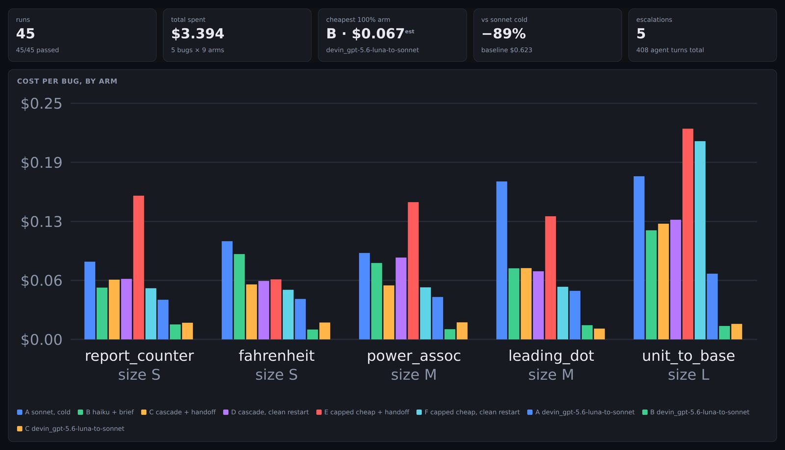
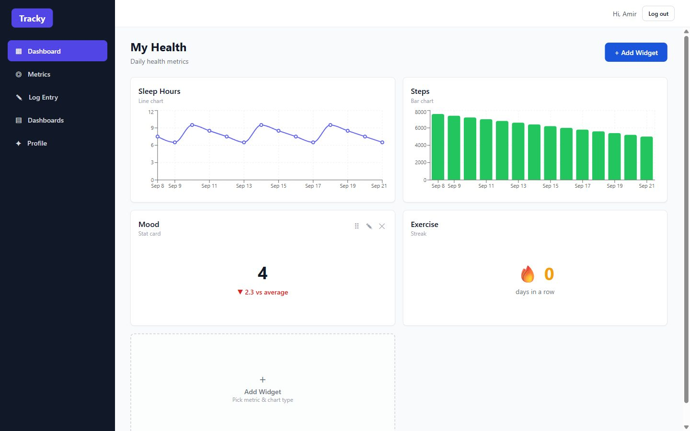
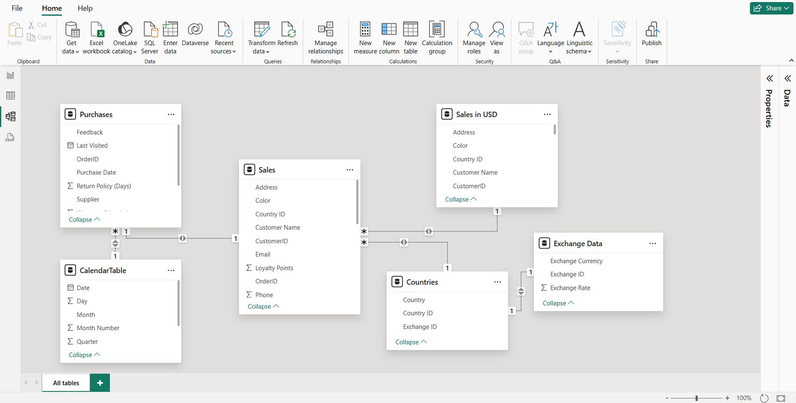
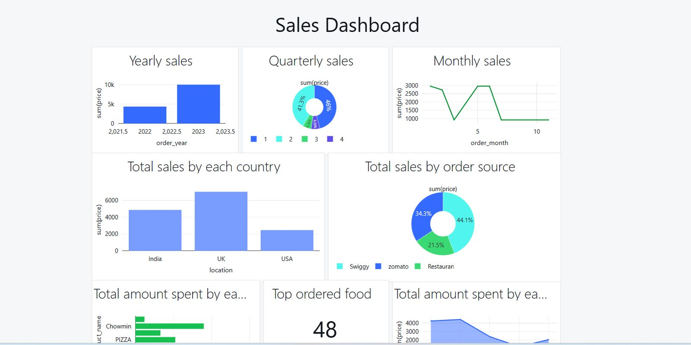

Software engineering · Data · ML & AI
Amir Abdullah Zakaria
I build systems people actually run on — the BI model behind a global company’s reporting, the automation that replaced its manual version, a REST API and SPA I own end to end, and AI agent tooling I benchmark rather than just describe.
Final-year Computer Science student at ELTE Budapest, graduating January 2027.
Data Analyst Intern at The Estée Lauder Companies and a research assistant in ELTE’s Modeling Lab.
Engineer first, label second: software engineering, data, ML or AI — what I care about is owning a problem from the decision through to the running system.
Open to software, data, ML and AI engineering roles from January 2027
- 100+
- hours a month returned by automation
- 16+
- reporting & governance processes automated
- 100k+
- records cleansed and restructured in Python
- 600+
- IT tickets triaged for a global user base
- 2nd
- place, LaunchLoop hackathon (preflight)
- 4.58/5.0
- CGPA, Stipendium Hungaricum Scholar
Budapest, Hungary
About
I am a final-year Computer Science student at ELTE in Budapest, graduating in January 2027 with a CGPA of 4.58 out of 5.0 as a Stipendium Hungaricum Scholar.
For the past year I have been a Data Analyst Intern at The Estée Lauder Companies, working on the platform behind procurement, demand management and finance. I turned scattered spreadsheets into a production Power BI star-schema model for vendor closing and savings tracking, automated 16+ reporting and governance processes that save over 100 hours a month, and cleaned 100,000+ records that had been quietly corrupting reports. I also administer Upland PSA for a worldwide user base, triaging 600+ tickets and managing Azure AD access groups.
In ELTE’s Numerical Analysis Modeling Lab I benchmark classical and deep learning methods for removing baseline wander from ECG signals — reproducing an EMBC 2025 paper on sparse dictionary learning networks and comparing CNN, Quadratic Programming, FISTA and FISTA-Net on the PhysioNet Challenge 2020 dataset.
Outside that I build things end to end and then measure them. preflight — a briefing layer that runs ahead of a coding agent and routes cheap work to cheap models — took second place at a hackathon on the strength of a cost benchmark, including the result that argued against my own design. Tracky is a Laravel REST API and a React TypeScript SPA I own on both sides. I also teach Discrete Mathematics and Computer Systems at ELTE, which has done more for how I explain technical things than anything else I have done.
Where I am going
I want to build systems organisations decide on — not dashboards people admire once and then work around. That means owning a problem the whole way: framing it with the people who carry its cost, designing the model, writing the code, and then coming back with a number that says whether it actually worked.
The engineers I want to be like can hold both halves at once — the executive conversation about what is worth building, and the operational detail that makes it survive production. Most people are good at one. I am deliberately practising both, which is why every project here has a stated decision as well as a stack.
I am not trying to be only a data person. Data engineering, machine learning, AI systems, backend and full-stack software — I have shipped in all of them and I care much less about the label on the role than about whether the thing is real, measured and running. Next I want to go deeper on ML and AI systems in production: evaluation, cost, latency and the unglamorous work of making a model trustworthy enough to act on.
How I work
Most of what goes wrong on a data or software project goes wrong before any code is written — the wrong thing gets built, carefully. So I keep two sides of the job separate, and I do them in that order.
Executive side
Deciding what is worth building
The half that happens in meetings, in the stakeholder’s vocabulary.
- Frame the problem with the team that owns it — procurement, demand management, finance — in their words, not in table names.
- Define “done” as a number before the first line of code: hours returned per month, closing accuracy, cost per resolved bug.
- Choose scope and sequence — and say plainly what I am not building, so nobody discovers it at handover.
- Report in their language, hours and money and risk, and keep a written record of the trade-offs I took and what I rejected.
Operational side
Making it real and keeping it running
The half that happens in an editor, and has to hold up on a Monday morning.
- Model the data — grain, dimensions, a star schema and measures that stay correct under slicer filtering.
- Build the pipeline — Power Query, Python, PySpark — with validation at every stage instead of one check at the end.
- Automate the repeat so the process does not depend on somebody remembering to run it.
- Test, then measure in production: PHPUnit and Cypress suites, pytest, a benchmark harness — evidence rather than assurances.
Plan → Align → Execute → Measure
-
01
Plan
Write the brief before the code: the grain of the data, the success metric, the risks I can already name, and what I am deliberately leaving out. If I cannot write it down, I do not understand it yet.
-
02
Align with stakeholders
Take the plan to the people across the global offices who will live with it and get the disagreement out on the plan, when changing it costs an afternoon rather than a quarter. Agree the cadence and who signs off.
-
03
Execute
Build in slices that can each ship on their own, validated as they go, so there is something usable early and no single big-bang handover at the end.
-
04
Measure
Go back afterwards with the number agreed in step one — 100+ hours a month, 32% less cost per bug — and publish it whichever way it comes out.
Step four is the one I care about most, including when it goes against me. The preflight benchmark produced a result that contradicted my own design — starting cheap with a capped budget came out 16% more expensive than simply using the strong model. It is at the top of that project’s README, and on its page here, with the numbers.
Experience
-
Data Analyst Intern
The Estée Lauder Companies Inc.
June 2025 – Present, Budapest
- Built a vendor-closing and savings-tracking solution from scratch, turning scattered Excel files into a production Power BI star-schema model with vendor, payment-term and fiscal-calendar dimensions.
- Designed Power Query transformations with multi-level fallback matching, and DAX measures that stay stable under slicer filtering, powering a Vendor Group → Tower → Vendor drill-down.
- Automated 16+ reporting and governance processes with Power Automate, Office Scripts and Python, saving over 100 hours a month.
- Cleansed and restructured 100,000+ records in Python, resolving mismatches, duplicates and missing values that had been corrupting reporting.
- Administered Upland PSA for a global user base, triaging 600+ IT tickets and managing Azure AD access groups.
- Partnered with stakeholders across global offices to align data outputs and reporting cadence across time zones.
-
Research Assistant — Numerical Analysis Modeling Lab
Eötvös Loránd University
June 2026 – Present, Budapest
- Reproduced ECG baseline wander removal experiments from an EMBC 2025 paper on sparse dictionary learning neural networks, using the PhysioNet Challenge 2020 dataset.
- Benchmarked CNN, Quadratic Programming, FISTA and FISTA-Net under the paper's own evaluation protocol and metrics.
- Reviewed the literature on baseline wander removal across filtering, wavelet, optimisation-based and deep learning approaches.
- Evaluated test-set reconstructions to assess which methods best preserve clinically relevant ECG morphology.
-
Teaching Assistant — Discrete Mathematics & Computer Systems
Eötvös Loránd University
September 2025 – Present, Budapest
- Tutor undergraduates in logic, set theory, combinatorics, graph theory and proof techniques.
- Lead hands-on Linux, Bash and PowerShell labs covering shell environments, file systems, processes and automation.
- Prepare practice exercises, lab materials and assessments.
Projects
Seven projects I can talk through end to end, across AI agents, data engineering, BI and full-stack software. Each links to the code, and to a writeup where there is one. Every screenshot below is a real capture of the running thing — nothing here is a mockup.
Featured
-

The results dashboard, from the committed benchmark data. 2nd place · LaunchLoop hackathon
preflight
A tech-lead pass that runs before a coding agent does
Scans a repository for zero tokens, has a cheap model write a short brief, lets the cheap model attempt the fix first, and escalates with a distilled post-mortem when it fails. Benchmarked over 45 runs across nine arms: a $0.01 brief let Haiku match Sonnet at 32% less cost, and the same brief handed to a GPT agent through a different CLI held at 74% less.
- Python
- LLM orchestration
- Claude Code CLI
- Devin CLI
- pytest
- GitHub Actions
-

A user-built dashboard. Every widget was configured in the UI. Tracky — Personal Analytics Dashboard
A Laravel 13 REST API and a React 19 TypeScript SPA
You define the metrics and the app adapts around them: one type column drives the logging input, the chart types the widget builder offers and the summary maths. Every record is owner-scoped at three independent server-side layers, covered by 50 PHPUnit feature tests and Cypress specs.
- Laravel 13
- PHP
- React 19
- TypeScript
- TanStack Query
- Cypress
-

The model — a star schema, not a pile of joined sheets. Power BI Data Analysis & Visualization
An end-to-end BI solution on a star schema model
Modelled the data as a star schema around a marked date table, wrote custom DAX measures including YTD and QTD rollups, and automated publishing to the Power BI Service with validation built into the refresh.
- Power BI
- DAX
- Star Schema
- Power Query
- Python
- ETL
-

The dashboard the Spark aggregations feed, in Databricks. Sales & Menu Analysis with PySpark
Scalable ETL and data quality checks on Databricks
Built distributed ETL pipelines in Databricks with an explicitly declared schema and data quality checks at each stage, aggregating customer spend and revenue trends into an analytical dashboard.
- PySpark
- Apache Spark
- Databricks
- SQL
- ETL

Also built
-
In development
qgate-agent
Human-in-the-loop containment for end-of-line manufacturing tests
When a vehicle fails its end-of-line test, someone has to decide in minutes how many to quarantine. qgate correlates the failure against build genealogy and station drift, proposes a containment window, and requires a human to approve it before anything is written — every tool read-only except the one that asks. Scored on fifty golden scenarios, including the ones where the right answer is to propose nothing.
- Python
- LangGraph
- FastAPI
- Kafka
- PostgreSQL
- Docker
-
FinTrack — Self-hosted Finance Tracker
A Laravel 13 app over a single SQLite file you own
Accounts, transactions, category budgets and reports, without handing a third party read access to a bank. The interesting constraint is shared household accounts: ownership and view-or-edit permission live on the pivot, and are enforced server-side on every route.
- Laravel 13
- PHP
- Blade
- Tailwind CSS
- SQLite
- PHPUnit
-
Developer Insights Analysis
What a global developer survey says about pay, satisfaction and language adoption
Cleaned and validated a large public survey dataset, then used outlier detection and correlation analysis to surface trends in job satisfaction, salary distribution and language adoption.
- Python
- pandas
- NumPy
- Seaborn
- Matplotlib
- scikit-learn
Skills
Grouped by what the work is, not by how impressive the logo is. Everything listed here appears in a project, a repository or a job on this page — if it is not in the code, it is not in the list.
Languages
- Python
- TypeScript / JavaScript
- SQL
- Java
- PHP
- C#
- C++
- Bash / PowerShell
- DAX
Python — data & numerics
- pandas
- NumPy
- SciPy
- Matplotlib
- Seaborn
- Plotly
- Jupyter
- openpyxl
Machine learning
- scikit-learn
- PyTorch
- XGBoost / LightGBM
- statsmodels
- Feature engineering
- Model evaluation & benchmarking
- CNNs
- Cross-validation & leakage control
Signal processing & optimisation
ELTE Modeling Lab
- scipy.signal
- PyWavelets
- WFDB / PhysioNet
- Quadratic Programming
- FISTA / FISTA-Net
- Sparse dictionary learning
- ruptures (change-point)
LLM & AI systems
- LangGraph
- LangChain
- Anthropic & OpenAI SDKs
- Langfuse
- Claude Code CLI
- Devin CLI
- Prompt & context design
- Cost / token benchmarking
- Agent evaluation harnesses
Data engineering
- PySpark
- Apache Spark
- Databricks
- ETL / ELT pipeline design
- Star-schema modelling
- Prefect
- Apache Kafka
- Avro / fastavro
- Data quality & validation
BI & automation
- Power BI
- DAX
- Power Query (M)
- Power BI Service
- Power Automate
- Office Scripts
- Excel (advanced)
- Upland PSA administration
Backend & APIs
- Laravel 13
- FastAPI
- Pydantic
- REST API design
- Eloquent ORM
- aiosql / psycopg
- JWT / Sanctum auth
- Authorisation policies
Frontend
- React 19
- TypeScript
- TanStack Query
- Vite
- Tailwind CSS
- Recharts
- Blade
- Accessible, semantic HTML
Databases
- PostgreSQL
- MySQL
- Oracle
- SQLite
- MS Access
- Query tuning & indexing
Cloud, infra & observability
- Docker & Compose
- Azure (fundamentals)
- Azure AD administration
- AWS (fundamentals)
- GitHub Actions
- OpenTelemetry
- Prometheus
- structlog
Testing & quality
- pytest
- PHPUnit
- Cypress
- Ruff
- pre-commit
- Type hints / mypy-style typing
- Benchmark harnesses
Ways of working
- Stakeholder alignment
- Requirements & scoping
- Technical writing / documentation
- Trade-off records
- Teaching & explanation
- Git / trunk-based workflow
Education
BSc Computer Science
Eötvös Loránd University (ELTE), Budapest
September 2023 – Expected January 2027
CGPA 4.58 / 5.0 Stipendium Hungaricum Scholar
Key coursework
- Algorithms & Data Structures
- Database Systems
- Machine Learning
- Numerical Analysis
- Discrete Mathematics
- Operating Systems
- Computer Networks
Contact
I am looking for software, data, ML and AI engineering roles from January 2027 — I am open across IT rather than fixed on one track. The fastest way to reach me is email.
Budapest, Hungary
Available from January 2027 for full-time roles.